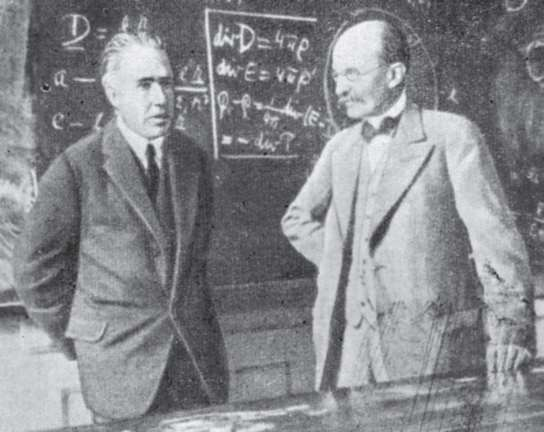
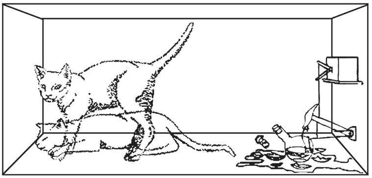

答案是不一定。在20世纪的最后10年中，量子计算机，这种在设计和操作方式上发生了革命性改变的计算机横空出世。尽管目前仍处于理论阶段，但经过不断摸索，量子计算机的计算能力有希望破解今天的加密算法。有朝一日，密码分析学会重回竞技场。

尼尔斯·玻尔（左）和马克斯·普朗克，量子力学的两位奠基人，照片摄于1930年。
这场刚刚萌芽的技术革命基于量子力学。量子力学是20世纪初，由包括丹麦人尼尔斯·玻尔（1885-1962）、英国人保罗·狄拉克（1902-1984）、德国人马克斯·普朗克（1858-1947）、维恩·海森伯（1901-1976）和埃尔文·薛定谔（1887-1961）在内的诸多科学家构建的一座理论大厦。量子力学提出的宇宙观违反常识，爱因斯坦持反对态度，曾因此说过一句名言：“上帝不掷骰子。”与爱因斯坦的保守形成对比的是，量子力学理论已经被成功验证了无数次，现在，它的正确性已毋庸置疑。整个科学界认为，从宏观层面上——由恒星、建筑、分子组成的宇宙——宇宙遵循经典物理学的规律。但是在量子世界——由夸克、光子、电子等亚原子粒子组成的小到不能再小的王国——则需要另外一套规则，通向令人惊奇的悖论。没有量子理论，就不会有核反应堆，不会有激光扫码器，也无法解释太阳的灿烂光辉或者DNA的功能。
1958年，在量子力学的研讨会上，玻尔就一位发言人的观点提出了以下见解：“我们都同意他的理论是疯狂的，但在关于这个理论正确与否的问题上，我们分成了两个阵营，无论它有多疯狂，都有50%的概率是对的。”量子力学到底有多疯狂？举个例子，就拿状态叠加的原理来说。当一个粒子同时占据两个以上位置或同时具有不同的能量时，我们就可以说它呈现出一种叠加状态。但当观察者测量这个粒子时，它总是只选择一个位置或具有某个具体的能量。薛定谔设计了一个思想实验，名为“薛定谔的猫”，用以阐释这个明显荒谬的概念。想象一只猫，把它放进一个不透明的密封箱子中，箱子中还放有一个烧瓶，烧瓶内装有有毒气体，通过某种设备把烧瓶和一个放射性粒子连接起来，如果粒子发生衰变，烧瓶就会被打破，放出毒气，猫将中毒而死。但问题是粒子在一定时间内衰变的概率是50%。整套设备，取决于一个粒子的行为，而这个粒子遵循量子物理的规律。

薛定谔的猫是一个思想实验，用以说明量子理论中叠加状态的概念。
假设已经到了既定的时间，猫会是死的还是活的？或者，用量子力学的行话来说，箱子-猫-系统处于什么状态？只有当观察者打开箱子，“观测”了系统的状态，察知粒子是否衰变，之后才能回答这个问题。因此，存在系统的叠加状态：严格来说，猫既不活着也没死去，而是既活又死。
有人认为叠加状态是一种难以置信的假设，但这些人要注意了，令人尊敬的物理学家已经提出了“多世界诠释”。比如，“多世界诠释”理论认为，叠加状态的概念是一种不可证实的论点，而实际上，对于每一个可能的状态，一个粒子都有它可能的位置、能量等；还存在另外一个宇宙，在那里，粒子具有某个具体的状态。换句话说，在一个宇宙中，猫是活的；在另外一个宇宙中，猫是死的。当观察者打开箱子，确定这只猫科动物实际活着时，他在另外一个可能的宇宙中也这样做了，而这两者是一个整体。在另外一个平行宇宙中，有它自己的恒星、行星、火车站和蚂蚁以及这位观察者，他也正看着箱子的内部，满面忧伤，因为那个宇宙中的猫已经被毒死了。多世界诠释的支持者仍不确定这些宇宙彼此会不会相互作用。即便如此，理论说明的是对量子现实为何以这种方式作为行为的诠释，而不是行为本身，这点已经在无数实验中被证实了。
话说回来，粒子的叠加状态和计算之间有什么关系吗？密码学又跟粒子的叠加状态有什么关系？1984年之前，尚无人思考这两个领域之间的关系。大约那时，英国物理学家大卫·多伊奇（David Deutsch）开始抛出一种革命性的观点：如果计算机不再遵循经典物理学，而是量子力学的定律，它们会是什么样呢？粒子的叠加状态如何促进计算呢？
回想一下，传统的计算机处理信息的最小单位——比特，能够采用对应的数值：0和1。另一方面，量子计算机处理信息的最小单位是粒子，而一个粒子具有两个可能的状态。比如，电子自旋只能有两个方向中的一个——向上或向下——代表数值0（下旋）或1（上旋）。但这个粒子具有神奇的属性，通过叠加的自旋状态，它可以同时表示两个数值。这种信息的新单位叫作“量子比特”，英文写作“qubit”，即“quantumbit”（量子比特）的缩写，这种处理能够打开通往超强计算机的大门。
传统计算机的计算是循序渐进的。下面以32位的数字信息为例。用32位数字，我们可以把从0到4 292 967 295的数字译成密码。传统计算机如果必须在这个范围内查找一个具体的数字，那它必须一点一点地进行。
但量子计算机执行这个任务速度要快得多。请想象，把32个电子放进一个特制的容器，并让它们进入叠加状态。那么，通过应用足够强的电子脉冲改变电子自旋的方向，从上旋变为下旋，这32个电子——量子计算机的量子比特——能够同时表现出所有上旋（1）和下旋（0）的可能组合。这样一来，查找想要的数字，就可以同时执行每一个可能的选择。如果增加量子比特的数量，比如250，同时运算的数量会有大约1075个，这个数字比我们宇宙包含的原子数还要多一点。
多伊奇的研究证明，量子计算机从理论上是可能的。终有一天它会成为现实，这是全世界众多高校和科研机构的目标。不过，迄今为止，科学家还未能克服建造一台可行的量子计算机所面临的技术难题。有些专家认为还要花费15~25年的时间，有些专家则怀疑这个想法根本行不通。
21世纪的“终结者”
众所周知，建造一台可行的量子计算机意义重大，不仅意味着密码学的坍塌——如此强大的计算能力服务于任何机构，无论是公共的还是个人的，都会转变世界强国的平衡。研发出这样一种技术，就相当于赢得了这场战役的胜利，能够轻而易举地赢得下一场技术竞争，就像20世纪下半叶的太空和军备竞赛一样。在这个领域处于领先地位具有决定性的作用，把它列为国家安全的最高机密一点也不为过。或许在世界的某个地方有个冷藏的地下隧道，隧道中存在一台量子计算机，它正等待着火力全开，永远改变人类的生活呢。
众所周知，量子计算会宣判密码学的死刑，我们以现代加密算法的名角RSA为例。前面提到，任何人想暴力破解RSA密码都必须要成功分解两个非常大的质数的乘积。这个运算过程相当耗时费力，目前尚未发现有数学捷径可走。那么分解RSA密码使用的超大质数，量子计算机能够挑战成功吗？1994年，美国计算机科学家彼得·肖尔（Peter Shor）肯定地回答了这个问题。肖尔设计了一款量子计算机可执行的算法，能够分解无限大的数字，用时比更加强大的传统计算机短许多。
如果这个震撼人心的设备有一天被创造出来，那么肖尔的算法就会把围绕在RSA身边的强大的加密基础设施一片一片地拆掉，而这个星球上最高机密的信息也会在一夜之间大白于天下，当代所有的加密系统会面临同样的命运。用马克·吐温的名言改述一下：关于密码分析已死的报道真实不虚，只不过把日期提前了一些。
永别了，DES，永别吧！
肖尔证明量子计算机能够终结RSA密码，两年后，另一位美国人鲁弗·格鲁弗（Lov Grover）也提出了同样的观点，量子计算机能够终结现代密码学的另一个支柱DES算法。格鲁弗设计了一个程序，能使量子计算机在一定时间内，从一系列可能的数值中查找出正确的数值，所用时间是传统计算机所用时间的平方根。还有一个常用的算法同样也会受到量子计算机发明的影响，那就是RC5，现在是微软浏览器使用的标准。